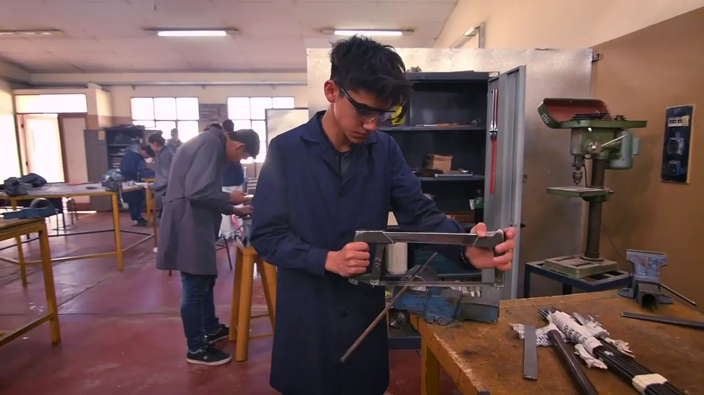
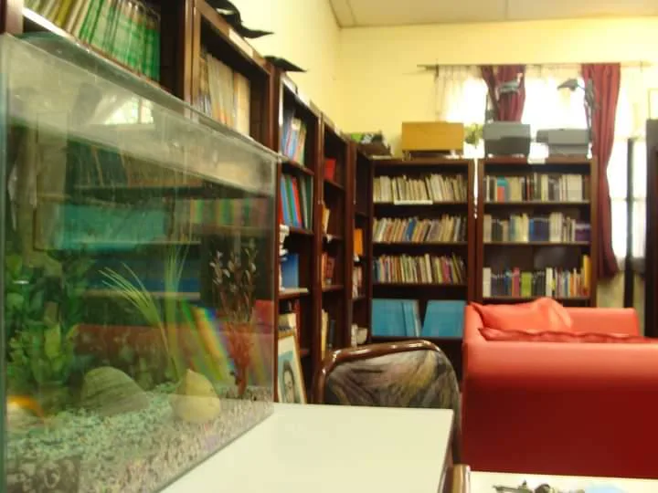
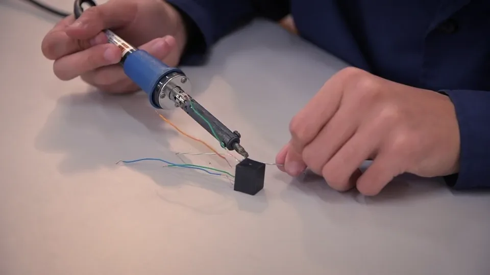

Aprender haciendo
El aula y el taller se encuentran. La formación técnica conecta los conocimientos con la práctica y los desafíos del mundo que nos rodea.

San Rafael, Mendoza
Somos la Escuela Técnica Reynaldo Merín. Un lugar para descubrir lo que podés hacer y construir lo que viene.
Conocé nuestra escuela01 / NUESTRA ESCUELA
Somos una comunidad educativa de San Rafael. Creemos en el valor de aprender haciendo, compartir conocimientos y crecer junto a otros.
El aula y el taller se encuentran. La formación técnica conecta los conocimientos con la práctica y los desafíos del mundo que nos rodea.
Estudiantes, docentes y familias forman parte de la escuela. Un espacio de encuentro, participación y construcción compartida.
La lectura, la curiosidad y el intercambio de ideas nos ayudan a desarrollar una mirada propia y seguir aprendiendo.

Un mundo por descubrir02 / BIBLIOTECA DIGITAL
Un espacio para leer, investigar y encontrar nuevas preguntas. Accedé a la biblioteca digital de la escuela y acompañá tu aprendizaje dentro y fuera del aula.
Explorar la biblioteca (abre en una pestaña nueva) Recursos para acompañar tus clases.03 / CENTRO DE ESTUDIANTES MERÍN
El CEM es el espacio de representación y participación de los estudiantes. Un puente para compartir ideas, impulsar iniciativas y construir juntos la vida escolar.

04 / CONTACTO
¿Querés conocer más sobre la escuela o hacer una consulta? Comunicate con nosotros o acercate a visitarnos.
Av. Alberdi 1270 · Mendoza
Abrir en Google Maps ↗ (abre en una pestaña nueva)Comunicate con la escuela a los teléfonos publicados o acercate a Av. Alberdi 1270. Allí podrás consultar los requisitos, las fechas y la disponibilidad actualizados.
Desde el botón “Explorar la biblioteca” de esta página. Se abrirá el sitio de la biblioteca digital en una pestaña nueva , donde podés consultar sus recursos.